전설 스킨 콘셉트 — 루돌프·사신·얼음 여우
2026년 11월 25일. 벚꽃 여우신과 같은 톤으로 다시 뽑은 시안입니다 (OpenAI gpt-image-2 생성, 실제 게임 화면 아님). 테마마다 하나씩 고르면 Meshy로 3D 모델로 바꿔 게임에 넣습니다.
루돌프 (크리스마스)
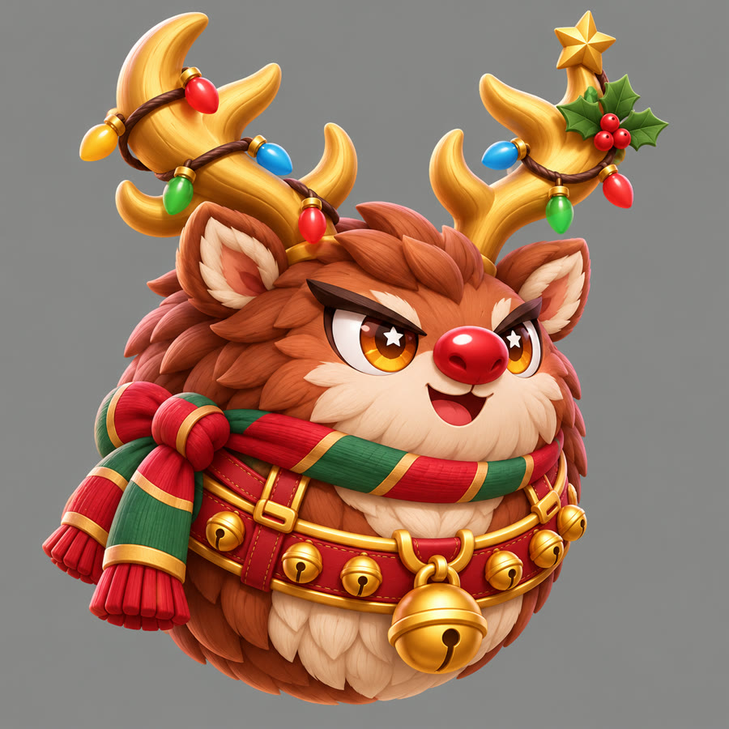
A. 전구 뿔 루돌프
금 뿔에 전구와 별, 방울 달린 썰매 벨트, 빨강·초록 목도리
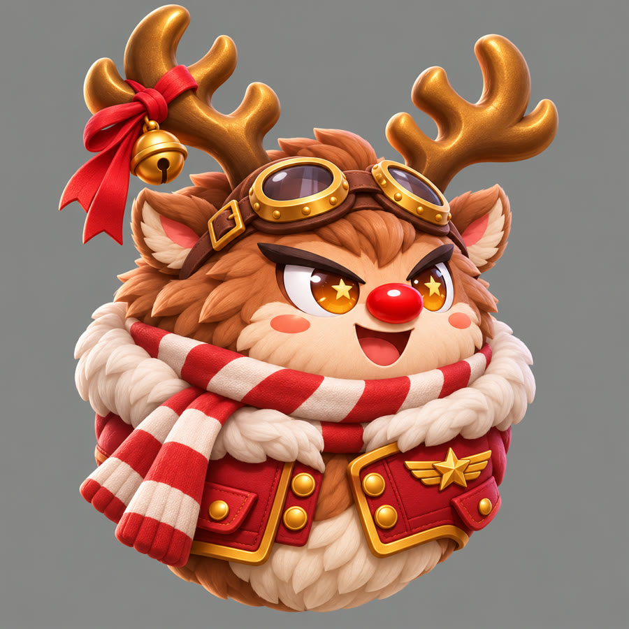
B. 썰매 조종사
비행 고글과 빨간 조종사 재킷, 줄무늬 목도리, 뿔에 리본과 방울
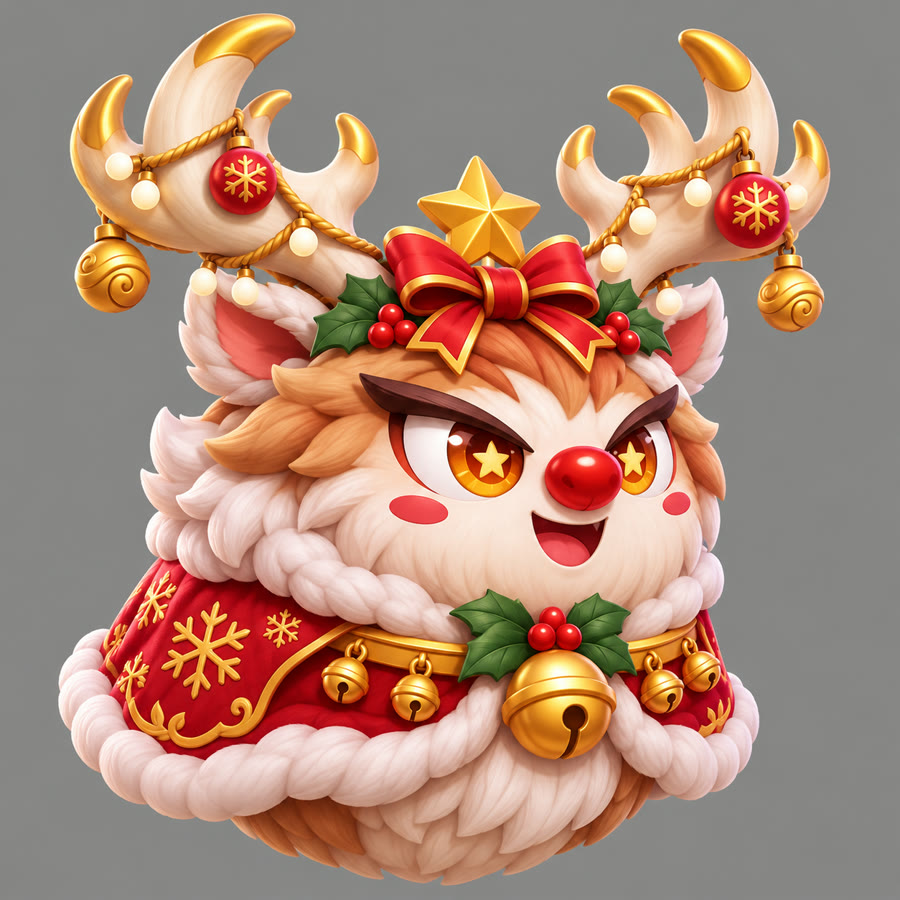
C. 크리스마스 왕
오너먼트로 꾸민 큰 상아색 뿔, 털 달린 빨간 망토, 큰 금방울
낫 든 사신
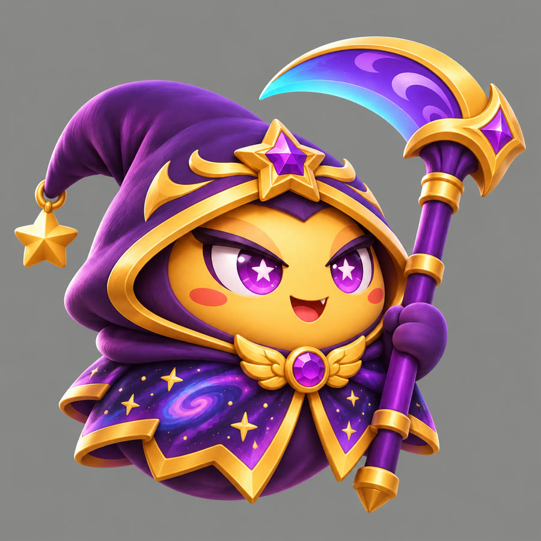
A. 꼬마 사신
노란 얼굴, 은하 무늬 보라 두건과 망토, 보라·하늘빛 낫
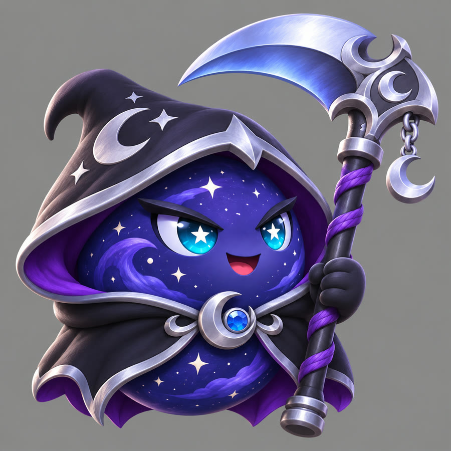
B. 한밤의 사신
별이 뜬 남색 몸, 검은 두건과 은 장식, 초승달 달린 은빛 낫
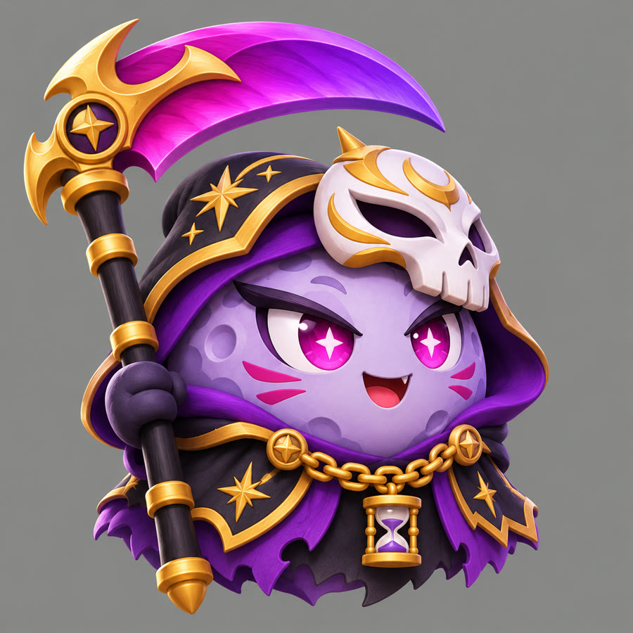
C. 가면 사신
연보라 몸, 비스듬히 쓴 해골 가면, 모래시계 장식, 자홍빛 낫
얼음 여우
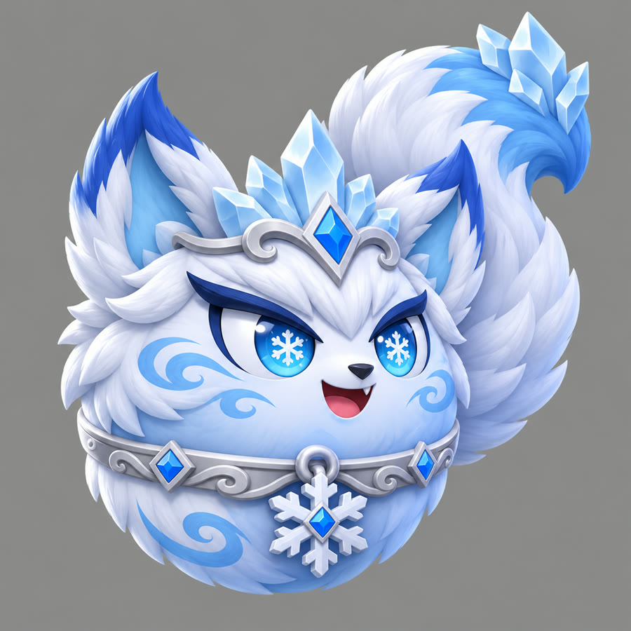
A. 얼음 결정 여우
얼음 결정 왕관, 결정 끝 꼬리 하나, 눈꽃 목걸이, 서리 무늬
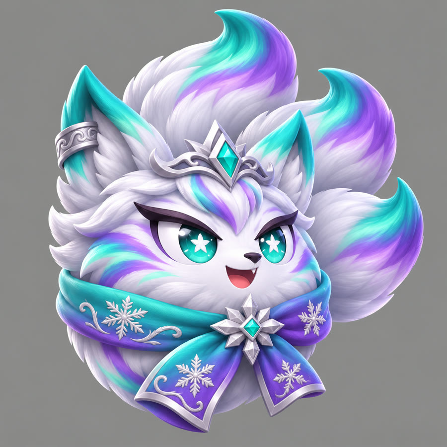
B. 오로라 여우
청록·보라 오로라빛 꼬리 셋, 오로라 목도리, 은 티아라
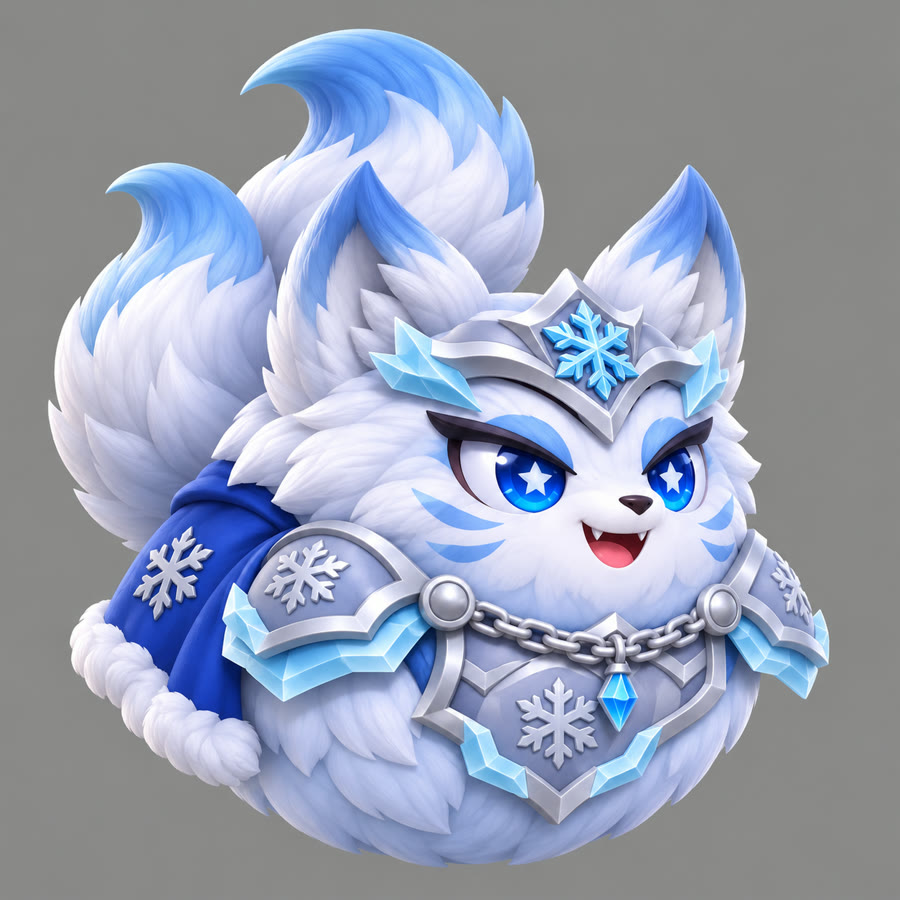
C. 얼음 기사 여우
은빛 갑옷과 눈꽃 문장, 털 달린 파란 망토, 꼬리 둘
낫 든 사신 — 다시 뽑은 안 (이전 void A 디자인 기준)
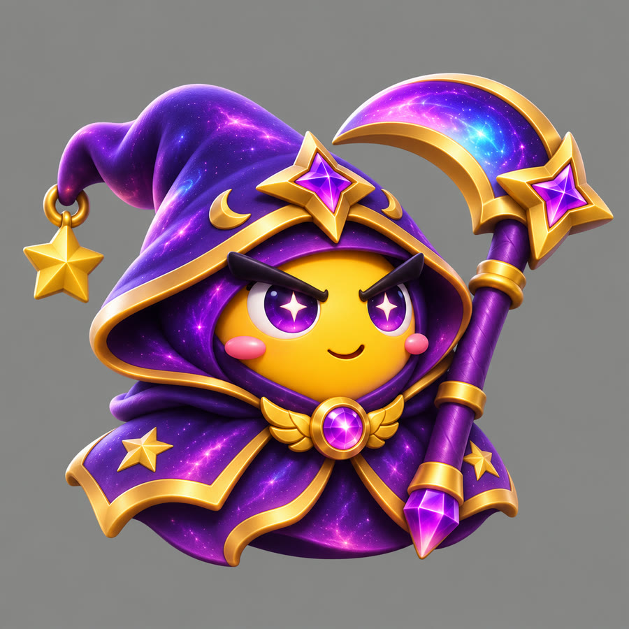
기준: 이전 void A
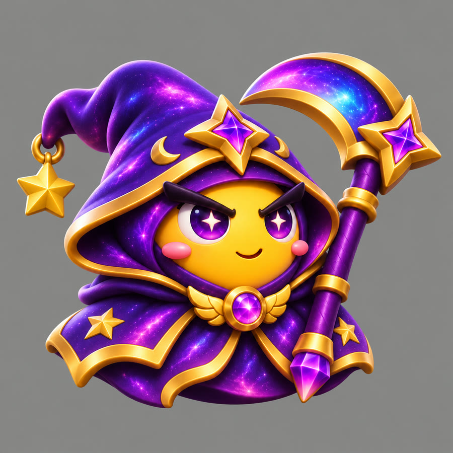
D. 깔끔하게 다시 그린 안
같은 디자인을 더 또렷하게
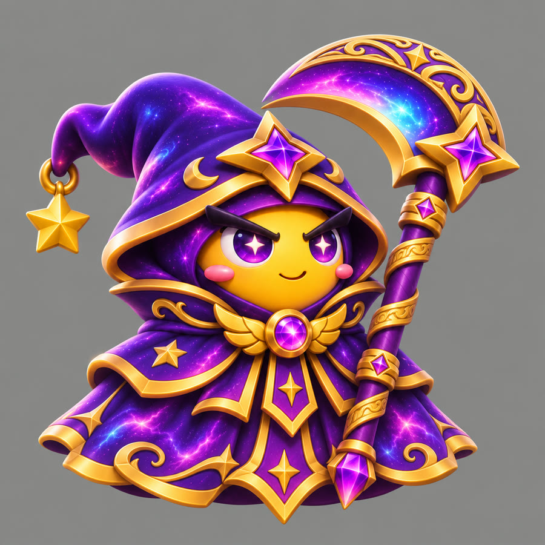
E. 더 화려한 안
긴 두 겹 망토와 높은 깃, 더 큰 낫과 별 문장